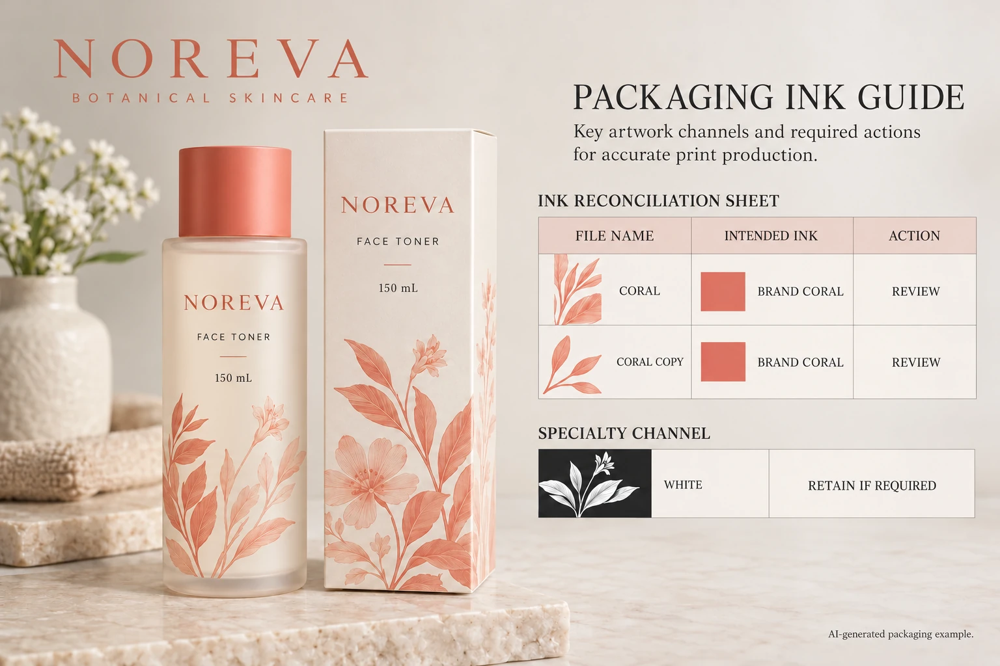

A visible match is not an ink identity
A screen preview can make different color definitions look similar. Conversely, two objects intended for the same production ink can arrive with different names because artwork came from several source files. The point is to identify intended channels, not to guess them from appearance.
Ask the designer where each relevant name originates. Is it used by the wordmark, a placed illustration or the main label background? Is the receiving printer expecting a spot ink, a process simulation or another supported route? The name alone does not answer all of those questions.
This task belongs between assembled artwork and production release. The linked-image and source-file guide helps identify which assets have been supplied. Here the task is to reconcile the production color instructions those assets introduce.
Inspect the exported plate list with prepress
Adobe's Output Preview documentation describes viewing separations and ink mapping for preview. A preview mapping is not evidence that the production PDF was permanently corrected.
Ask the operator to identify the actual export, list the channels and locate the objects associated with the questionable names. Record what the file contains before deciding how to correct it. If only one party has the source files, make the responsibility for the correction explicit.
Do not ask procurement to remap every similar swatch blindly. White, varnish, foil or another technical separation may use a convenient preview color rather than its eventual physical appearance. Its purpose must be identified with the receiving prepress team before anything is removed or merged.
Likewise, avoid substituting a standardized color reference merely because a swatch name resembles it. The brand and printer need to agree the actual color intent and production route. This article offers no unofficial color-library conversion or exact-match promise.
Decide what should be unified and what should remain separate
Imagine a hypothetical toner label assembled from a logo and a separate botanical drawing. Both use the same agreed coral ink, but the imported files carry different names. A controlled source correction may make the intended single channel clear and avoid an unexplained extra separation.
Now imagine a label using an opaque white underprint and a finishing instruction. Their preview colors might be chosen simply to make them visible in the design. Merging those technical instructions into the coral channel would change the job, even if it shortened the list.
The two cases require opposite actions. That is why the reconciliation needs an intended role and a receiving-team acknowledgement, not just a color comparison. Keep physical color appearance in its own review; the color-matching guide addresses relevant references and packaging context.
Make a channel reconciliation record
Use the current export and source assets to fill this table. Leave an unknown role pending rather than guessing.
| Observed name | Source or object | Intended production role | Agreed action |
|---|---|---|---|
| First disputed name | Marked logo or graphic | Confirmed ink or unresolved instruction | Keep, unify or investigate |
| Similar imported name | Identified placed asset | Same ink only if acknowledged | Controlled source correction if agreed |
| White or finishing channel | Marked technical objects | Named supplier-supported function | Retain or amend under prepress direction |
| Process channels | Relevant artwork elements | Expected process content | Confirm presence against the proposed route |
| Replacement export | File ID and revision | Accepted set of instructions | Reinspect and record acknowledgement |
First inventory the observed names. Then locate the source objects and ask both design and prepress to confirm the intended roles. Make the approved source changes, produce a replacement export and inspect its channel list again. Have the receiving printer acknowledge the same file.
Stop the affected release if a channel's purpose remains unknown, a technical layer disappeared during correction or the printer is reviewing an older export. A screenshot labelled final does not resolve a discrepancy between files.

Attach the decision to the job, not a temporary conversation
Retain the agreed channel names with the artwork reference. If another variant is assembled from different assets, check the newly introduced channels instead of assuming a previous variant's reconciliation covers it. The brand can keep a consistent appearance while individual files still contain different technical instructions.
For a cosmetic label quotation, send the container details, finished dimensions, quantity per artwork and the current export. Include the disputed names and marked objects, plus any supplier-provided separation instructions. The contact form prepares your message; source files and PDFs should be sent separately through email or WhatsApp. Ask for a confirmed production interpretation before approving another file called final.